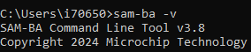
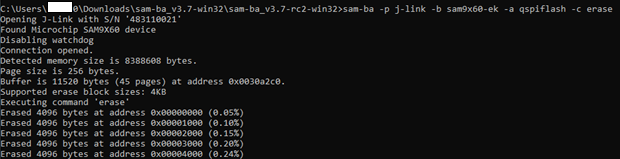
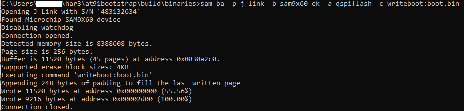
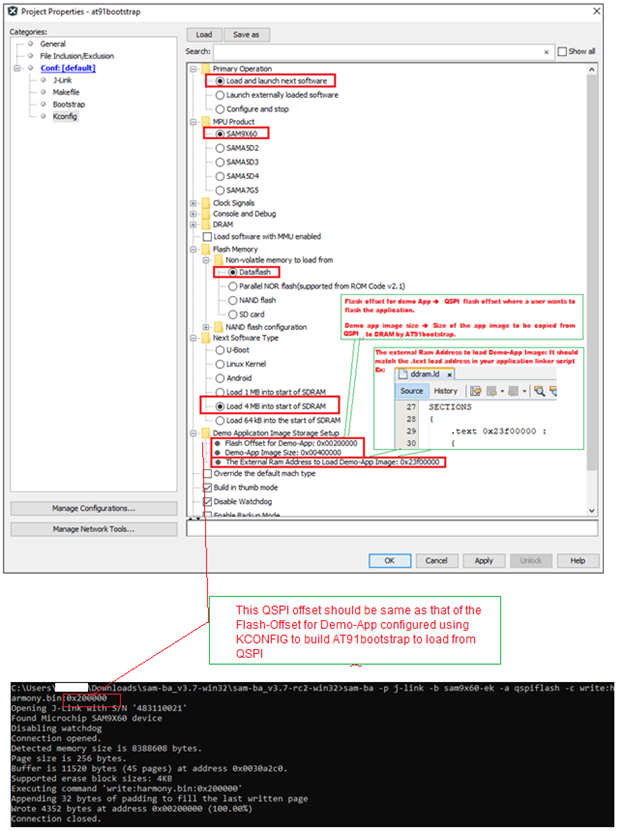
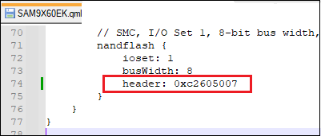
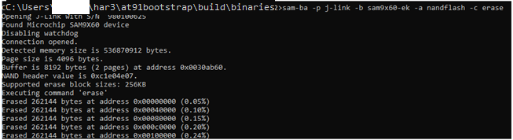

Note:
This guide will explain how to use SAM-BA to Write Boot Configuration Packet & Flash at91bootstrap, RTOS/Baremetal applications to external NVM for SAM9X60.
- SAM9X60 boot process click here
- SAM9X60 data sheet
- SAM9X60 curiosity development board
- SAM9X60 Evaluation kit
Introduction
This document will guide the user on how to,
- Write boot sequence controller configuration register(BSC_CR) & boot configuration packet to configure first stage bootloader.
- Flash boot.bin (at91bootstrap) & harmony.bin (RTOS/Baremetal application) file to external NVMs like QSPI,NAND & SD-Card.
Prerequisites
Details
- Familiar with the features of the SAM9X60_board (board can be evaluation Kit or Curiosity board) and understanding about the jumpers & Connectors in the board.
- Install SAM-BA tool on your windows host PC.
- To Download the latest version of SAM-BA tool for Windows click this link.
- Download the ZIP file and unzip it into a working directory of your choice.
- Add the SAM-BA directory path to the environment variables.
- To do this from your PC –> Open the Start Search, type in “env”.
- Choose “Edit the system environment variables” –> Click “Environment Variables” –> “System Variables” –> add SAM-BA directory path to path variables.

- Once the SAM-BA Host program has been installed, the execution of the application is from the Windows command prompt.
- Now open Windows command prompt and enter the below command to ensure sam-ba is installed properly.
sam-ba -v

-
Refer this link to configure and build the at91bootstrap to load the application from the user preferred NVM like QSPI, NAND or SDCard.
Note: This resultant at91bootstrap file (boot.bin) built with the preferred NVM configuration only to be used here.
- Refer this link to build harmony application.
Setup SAM-BA Host to Monitor Communications
Details
In this section you will establish SAM-BA Host Application communications with the target’s (SAM9X60) SAM-BA Monitor. Then you will use the SAM-BA Host Applet (qspiflash) to erase and then write the boot.bin (at91bootstrap) and harmony.bin (MPLAB Harmony 3 application) binary images to NOR Flash Memory.
Step 1: To communicate with the SAM-BA Monitor on the target, you must have installed the SAM-BA Host on a Host Computer.
Step 2: Ensure there is no SD memory card inserted.
Step 3: Power the board by connecting a Micro-B USB cable to USBA port (J7) on the SAM9X60-EK or (J1) on the SAM9X60 Curiosity Development Board.
Step 4: Establish UART serial communication with PC through J24 on SAM9X60 Evaluation Kit or J11 on SAM9X60 Curiosity Development Board.
Step 5: Open Disable boot Jumper(J13) on SAM9X60 Evaluation Kit or Open the J4 NAND boot jumper on SAM9X60 Curiosity Development Board.
Step 6:
- If you are using SAM9X60 Evaluation Kit follow these steps:
- 5.1. Push and hold the “DIS_BOOT” button.(This disables booting from the onboard memories - NAND and NOR(QSPI) flash Memory)
- 5.2. Reset the board by pressing and then releasing the reset “nRST” button.
- 5.3. Release the “DIS_BOOT” button.
- If you are using SAM9X60 Curiosity Development Board follow these steps:
- 5.1. Open the J4 NAND boot jumper.(This disables booting from the NAND flash Memory)
- 5.2. Reset the board by pressing and then releasing the reset “RESET” button.
- 5.3. Close the J4 NAND boot jumper.
Now, the SAM9X60_board will boot to the SAM-BA Monitor and start communications with the SAM-BA Host Application.
Note:
-
SAM-BA communication Port can be j-link, serial or secure.
-
If user want to program the SAM9X60 Evaluation Kit, using j-link instead of serial UART port, then connect J22 with PC via USB cable and replace “serial” in SAM-BA commands with “j-link”.
- Eg: Replace sam-ba -p serial -b sam9x60-ek -a lowlevel with sam-ba -p j-link -b sam9x60-ek -a lowlevel
***The board variant for SAM9X60 Curiosity might not be available yet in SAM-BA, so you can choose the SAM9X60-EK with the -b parameter of SAM-BA.***
1. Program external QSPI flash memory
Details
1.1. Erase QSPI flash memory
Erase the contents of the QSPI Flash memory on the SAM9X60board with the following command:
sam-ba -p serial -b sam9x60-ek -a qspiflash -c erase
Example:

1.2. Program boot.bin to QSPI flash memory
Program the boot.bin file on the SAM9X60_board with the following command:
sam-ba -p serial -b sam9x60-ek -a qspiflash -c writeboot:boot.bin
- Note: Change directory to the location of boot.bin
Example:

Note: Refer this link to configure and build the at91bootstrap to load the application from QSPI.
The at91bootstrap file (boot.bin) built with QSPI configuration only to be used here.
1.3. Program harmony.bin to QSPI flash memory
To program the application binary, harmony.bin file on the SAM9X60_board, use the following command:
sam-ba -p serial -b sam9x60-ek -a qspiflash -c write:harmony.bin:QSPI_OFFSET
Note:
* The QSPI_OFFSET should be the same offset used in the KCONFIG, while configuring the at91bootstrap to load from external QSPI
* Change directory to the location of harmony.bin.
Example:

Note:
To learn about more SAM-BA applet commands, refer your SAM-BA installation directory/doc/applet.html
2. Program External NAND Flash Memory
Details
Note:By default PMECC configuration for the NAND populated on the SAM9X60 Curiosity Development Board is not aligned with the one of the SAM9X60-EK board. The PMECC parameter for the SAM9X60 Curiosity board with MX30LF4G28AD-XKI NAND flash memory is 0xc2605007. User has to do the below two modification to use sam9x60-ek sam-ba applet on curiosity to program NAND flash memory. For information on NAND header values, please refer to SAM9X60 datasheet section "12.4.7.1.1 Method 1 (recommended): NAND Flash Specific Header Detection".
- To modify the PMECC parameter in the SAM-BA Applet –> open sam-ba installation directory/qml/SAMBA/Device/SAM9X60/SAM9X60EK.qml and modify the NAND Flash header to 0xc2605007

- Set the NAND header of the SAM9X60 Curiosity Development boadr using the below command.
sam-ba -p serial -b sam9x60-ek -a nandflash:::0xc2605007

2.1. Erase NAND flash memory
Erase the contents of the NAND Flash memory on the SAM9X60_board with the following command:
sam-ba -p serial -b sam9x60-ek -a nandflash -c erase
Example:

2.2. Program boot.bin to NAND flash memory
Program the boot.bin file on the SAM9X60board with the following command:
sam-ba -p serial -b sam9x60-ek -a nandflash -c writeboot:boot.bin
- Note: Change directory to the location of boot.bin Example:

Note: Refer this link to configure and build the at91bootstrap to load the application from NAND flash memory.
The at91bootstrap file (boot.bin) built with NAND configuration only to be used here.
2.3. Program harmony.bin to NAND flash memory
To program the application binary, harmony.bin file on the SAM9X60_board, use the following command:
sam-ba -p serial -b sam9x60-ek -a nandflash -c write:harmony.bin:NAND_OFFSET
Note:
* The NAND_OFFSET should be same as the one used in the KCONFIG, while configuring the at91bootstrap to load from external NAND flash.
* Change directory to the location of harmony.bin.
Example:

Note:
To learn about more SAM-BA applet commands, refer your SAM-BA installation directory/doc/applet.html
3. Program External SD CARD
Details
To program the at91bootstrap -boot.bin file and application binary -harmony.bin file on SD-card:
- (i) Format the SD card using your PC/Laptop.
- (ii) Copy and paste boot.bin and harmony.bin into the SD card from your host PC.
Note: Refer this link to configure and build the at91bootstrap to load the application from SD Card.
The at91bootstrap file (boot.bin) built with SD card configuration should be used here.
4. Program BSC_CR & Boot Configuration Packet
Details
After a reset, The ROM code reads the Boot Configuration Packet from the SRAM dedicated to Emulation mode if the bit BSC_CR.EMUL_EN is set to 1 or from the OTP matrix and configure boot sequence, Enable/Disable Monitor, configure the serial console UART.
Using Emulated OTP enables the user to test several boot configuration options, including secure boot mode without programming the OTP.
Note: If Emulation mode is enabled, the emulation SRAM is not backed up. After a power off/on, the configuration and content are lost.
4.1. Enable/Disable Emulation mode in BSC_CR
To Enable/Disable Emulation mode in Boot Sequence Controller Configuration Register (BSC_CR), the following SAM-BA command should be used:
//To Enable Emulation Mode:
sam-ba -p serial -d sam9x60 -a bootconfig -c writecfg:bscr: EMULATION_ENABLED
//To Disable Emulation Mode:
sam-ba -p serial -d sam9x60 -a bootconfig -c writecfg:bscr: EMULATION_DISABLED
4.2. Steps to write Boot Configuration Packet to emulated SRAM
- Emulation enable : sam-ba -p serial -d sam9x60 -a bootconfig -c writecfg:bscr:EMULATION_ENABLED
- Reset : sam-ba -p serial -d sam9x60 -a bootconfig -c resetemul
- Refresh config : sam-ba -p serial -d sam9x60 -a bootconfig -c refreshcfg:emul
- Write Config : sam-ba -p serial -d sam9x60 -a bootconfig -c writecfg:bcp-emul:NFC_IOSET1 // Refer section 4.4. for different configurations
- Lock config : sam-ba -p serial -d sam9x60 -a bootconfig -c lockcfg:bcp-emul
4.3. Steps to write Boot Configuration Packet to OTP
- Emulation disable: sam-ba -p serial -d sam9x60 -a bootconfig -c writecfg:bscr:EMULATION_DISABLED
- Refresh config : sam-ba -p serial -d sam9x60 -a bootconfig -c refreshcfg:otp
- Write Config : sam-ba -p serial -d sam9x60 -a bootconfig -c writecfg:bcp-otp:NFC_IOSET1 // Refer section 4.4. for different configurations
- Lock config : sam-ba -p serial -d sam9x60 -a bootconfig -c lockcfg:bcp-otp
4.4. Boot Configuration Packet- different configurations available:
The writecfg command programs the Boot Configuration Packet (BCP) into the Emulated SRAM, if the emulation mode of the OTPC is enabled. Else BCP packets are stored inside the OTP matrix.
User can use the below command to get the full list of boot configurations possible:
sam-ba -p serial -d sam9x60 -a bootconfig -c writecfg:help
Example boot configurations:
// boot config with Serial Console on FLEXCOM0, boot from SDMMC1 (PA10 as card-detect pin) store in OTP matrix
sam-ba -p serial -d sam9x60 -a bootconfig -c writecfg: bcp-otp:FLEXCOM0_USART_IOSET1,SDMMC1_IOSET1_PA10
// Empty boot configuration packet in OTP matrix
sam-ba -p serial -d sam9x60 -a bootconfig -c writecfg: bcp-otp:
// boot config with SAM-BA Monitor Disabled, boot from SDMMC1 (PA10 as card-detect pin) store in OTP-Emulation mode
sam-ba -p serial -d sam9x60 -a bootconfig -c writecfg: bcp-emul:MONITOR_DISABLED,SDMMC1_IOSET1_PA10
// Empty boot configuration packet in OTP-Emulation mode- Emulated SRAM
sam-ba -p serial -d sam9x60 -a bootconfig -c writecfg: bcp-emul:
Note:
To learn about more bootconfig SAM-BA applet commands: Refer your SAM-BA installation directory/doc/bootconfig-otp.html
Links
- Click here to learn how to configure first stage bootloader for SAM9X60 MPU
- Click here to learn how to configure/built and debug second stage bootloader(at91bootstrap) for SAM9X60 MPU
- Click here to develop a harmony based application for SAM9X60 MPU using MPLAB® X IDE